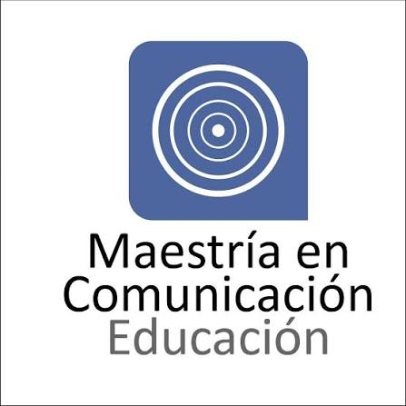

Proyecto Educomunicativo y Realidad Aumentada
Desliza hacia abajo para comenzar el recorrido
*Interactúa con los objetos 3D moviendo el puntero sobre ellos*

Desliza hacia abajo para comenzar el recorrido
*Interactúa con los objetos 3D moviendo el puntero sobre ellos*

Investigación Creación Línea: Educación y medios interactivos
Autor: Manuel Alejandro Gómez Cortés
Lic. en Biología
Seminario I de investigación
Maestría en Comunicación - Educación
Universidad Distrital Francisco José de Caldas
Química inorgánica abstracta (estructuras, enlaces, electrones, funciones químicas). Nivel micro y nanométrico difícil de comprender. Enseñanza bidimensional (tablero, libro) y modelos 3D limitados. Consecuencia: memorización, desmotivación, aprendizaje mecánico y no significativo.
Modelos tradicionales y "bancarios". Maestro como dador de conocimiento y estudiante como receptor pasivo.
Entornos interactivos: diálogo, colaboración, experiencias sensibles mediante herramientas tecnológicas de inmersión.
Propuesta: Realidad Aumentada (RA). Materializa lo invisible y abstracto, reduciendo la carga cognitiva en ciencias naturales.
Aplicación: Experiencia pedagógica interactiva con RA en estudiantes de 8° y 9° (Colegio Calasanz).
Resultados: Aula como dispositivo mediador, dinamización de relaciones, apropiación de conocimientos y reconfiguración de prácticas educomunicativas.
¿De qué manera el diseño y mediación tecnológica de un entorno interactivo de realidad aumentada incide en las prácticas educomunicativas y facilita la apropiación de conceptos sobre funciones químicas inorgánicas en estudiantes de grado 8° y 9° del Colegio Calasanz Bogotá?
Evaluar la incidencia del diseño y la mediación tecnológica de un entorno interactivo de realidad aumentada en las prácticas educomunicativas y en la apropiación de conceptos sobre funciones químicas inorgánicas en los estudiantes de grado 8° y 9° del Colegio Calasanz Bogotá.
1. Desarrollar un entorno interactivo de realidad aumentada que incida en las prácticas educomunicativas y facilite la apropiación de conceptos sobre funciones químicas inorgánicas en estudiantes de grado 8° y 9° del Colegio Calasanz Bogotá.
2. Implementar el entorno interactivo de realidad aumentada con los estudiantes de grado 8° y 9° del Colegio Calasanz Bogotá, promoviendo dinámicas de interacción, colaboración y el desarrollo de nuevas prácticas educomunicativas en el aula.
3. Evaluar el nivel de transformación en las prácticas educomunicativas de estudiantes de grado 8° y 9° del Colegio Calasanz Bogotá a partir de la experiencia con el entorno interactivo de realidad aumentada.
(Arabit-García, García-Tudela, & Prendes-Espinosa, 2021)
(Zhang, Feijoo-Garcia, Gu, Popescu, Benes, & Magana, 2024)
(León Lescano, Eyzaguirre Mamani, & Gómez Illatopa, 2016)
(Bernal Párraga, Ibarvo Arias, et al., 2025)
(Zhang, Li, Huang, Feng, & Luo, 2022)
Concepto clave: Interfaces colaborativas y carga cognitiva.
Aporte: Pilar en la intersección de educación, comunicación y RA. Demuestra cómo la RA reduce la "carga cognitiva" extrínseca al manipular conceptos abstractos de forma tangible.
Concepto clave: Desarrollo de habilidades espaciales.
Aporte: Creador de "Construct3D". Argumenta por qué la química se beneficia de la RA para simular experimentos y comprender geometría tridimensional.
Concepto clave: El estado de flujo (Flow) y la educación STEM.
Aporte: Evalúa si la RA mejora resultados académicos o es solo un "efecto novedad", vinculándola con la atención y el engagement.
Aporte: Su revisión sistemática es obligatoria en el estado del arte para justificar cómo las metodologías de RA en ciencias exactas modifican los paradigmas de enseñanza.
Evaluar la incidencia del diseño y mediación tecnológica de un entorno interactivo de RA.
Objetivos Específicos: Desarrollar entorno, implementarlo y evaluar el nivel de transformación en las prácticas.
Población: Estudiantes de grado 8° y 9°.
Contexto: Colegio Calasanz Bogotá.
Cuándo: Primer semestre del 2027.
Tipo: Cualitativo, descriptivo observacional. Grupos focales. Nivel Integrativo.
Herramientas: Guías de usabilidad, pruebas de software, Pre-test y post-test.